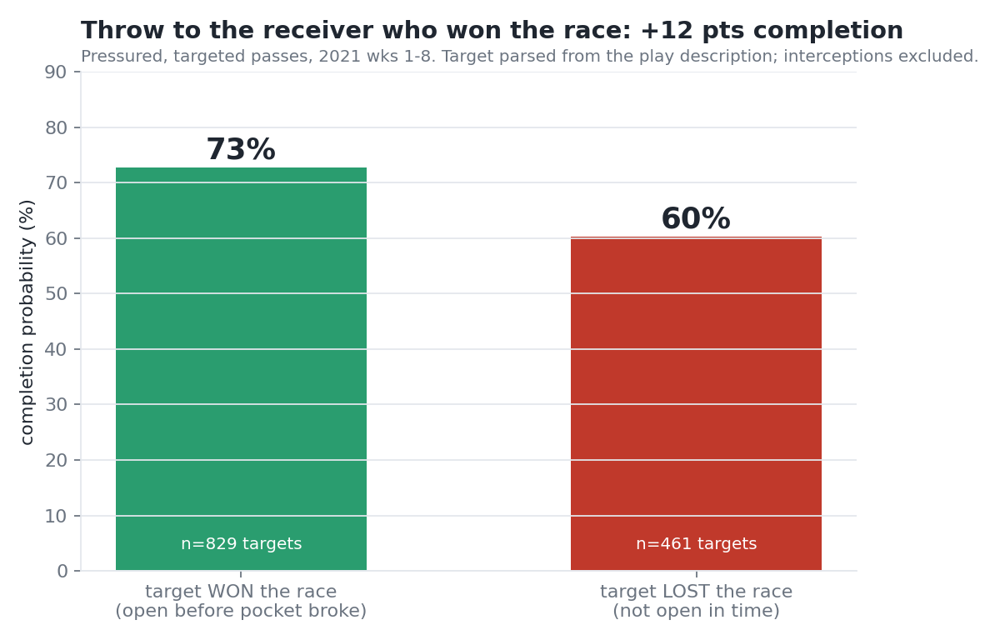
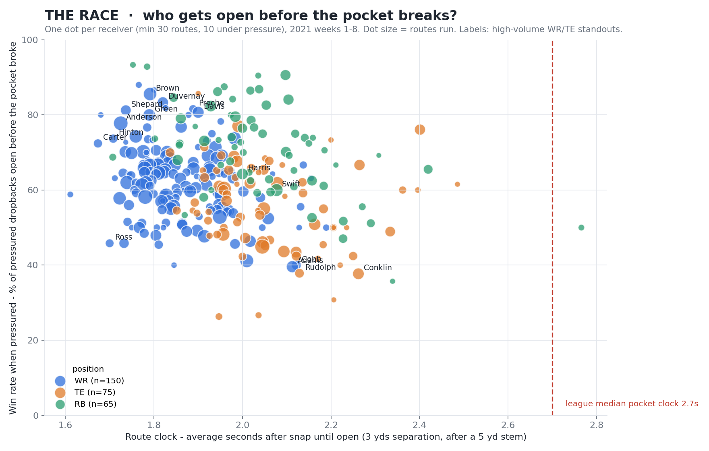
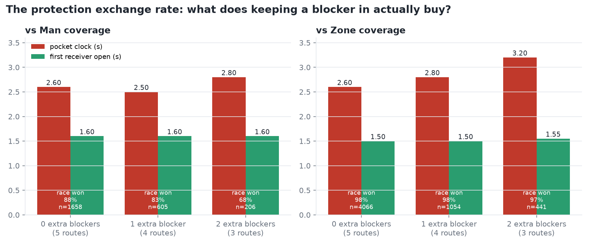
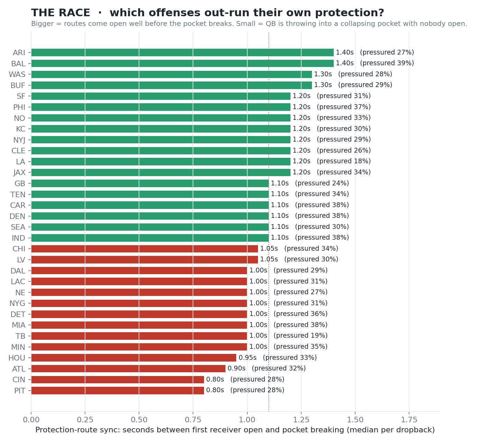
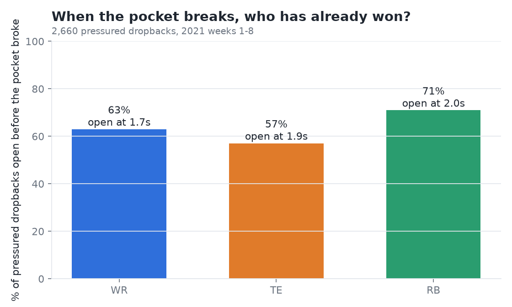
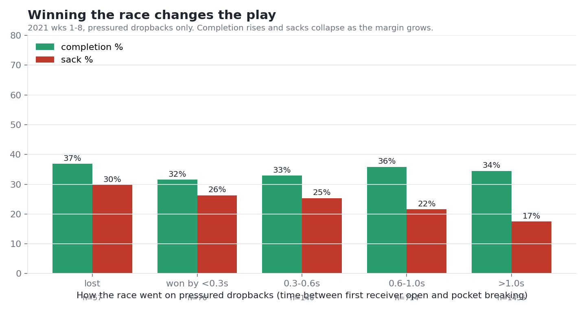

NFL BIG DATA BOWL · NYU EDITION
THE RACE — Pocket Clock vs. Route Clock
Every pass play is a race between two clocks: how fast the pass rush breaks the pocket, and how fast a receiver gets open. We measure both from Next Gen Stats tracking on every 2021 dropback and show who wins — per play, per receiver, per team.
73% vs 60%completion when the QB throws to a receiver who won the race vs one who hadn't (1,290 pressured targets)
2.7 s / 1.8 smedian pocket clock vs median route clock
30% → 17%sack rate when nobody wins vs a receiver wins by >1 s
0.0 spocket time bought by an extra blocker vs man coverage (+0.6 s vs zone with two)
📺 Broadcast mock (click Lower-third, then Play)
Mahomes → Hill, 75-yd TD
Heinicke → McLaurin, 40-yd TD
Prescott → Gallup (open man ignored)
📊 Charts

Validation — winning the race changes completion probability

Scout view — who gets open before the pocket breaks

Coach view — the protection exchange rate

Team sync — offenses that out-run their own protection

By position — who has already won when the pocket breaks

Play level — completion and sack rate by race margin
Code & README
All Python, runs end to end on the public Big Data Bowl data: compute_race.py → make_charts.py → race_tv.py → team_report.py → race_commentary.py. See the README for method, findings and limitations.